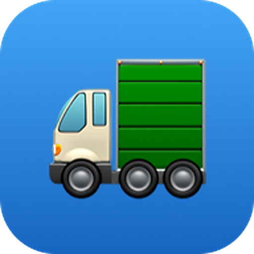
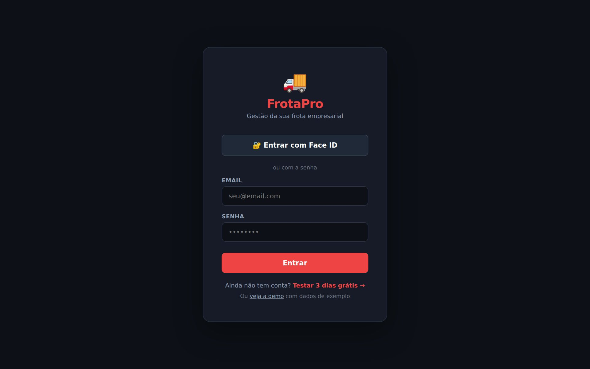
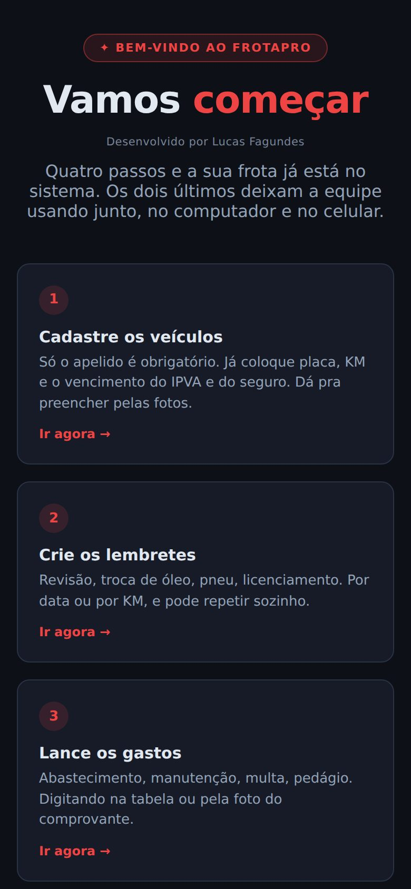
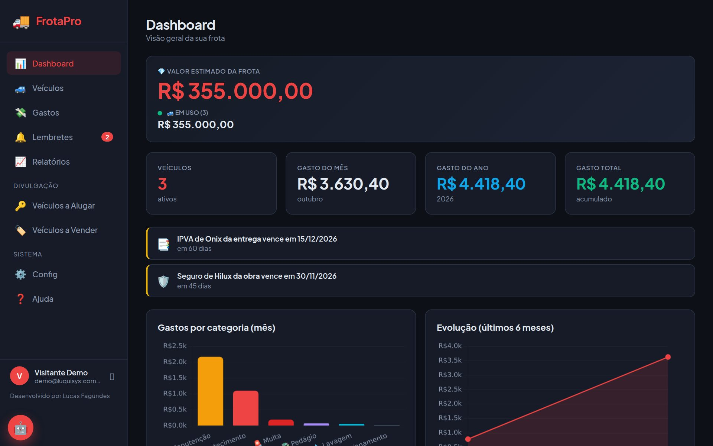
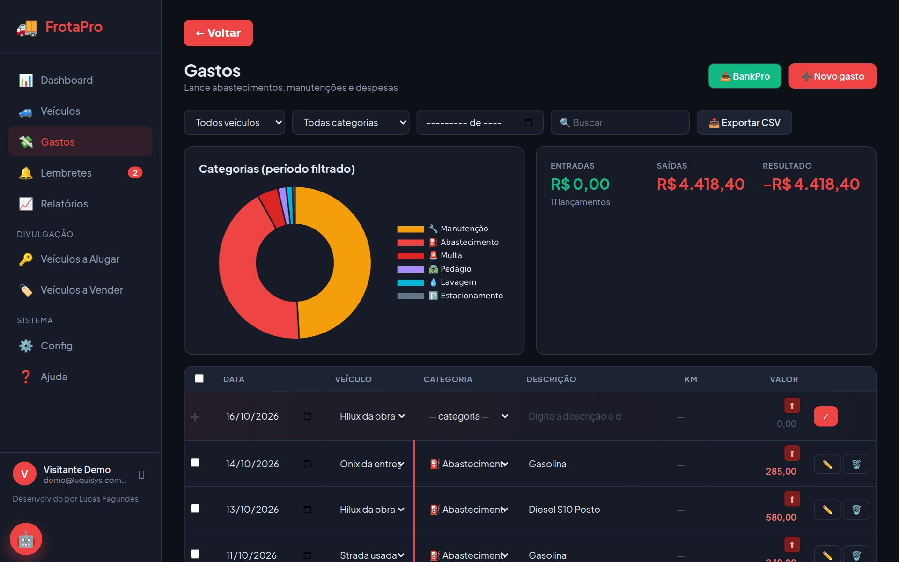
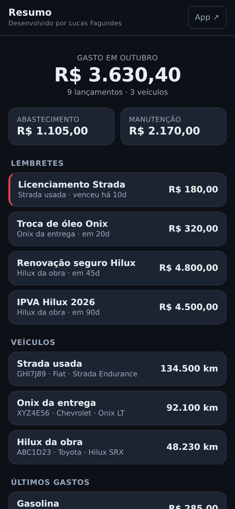
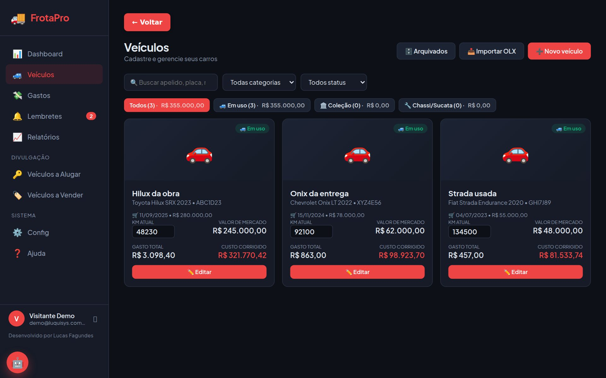
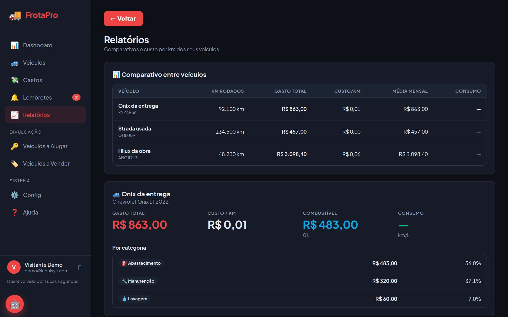
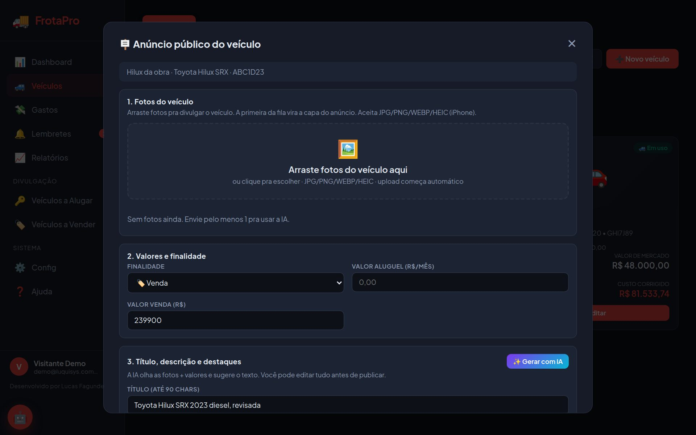
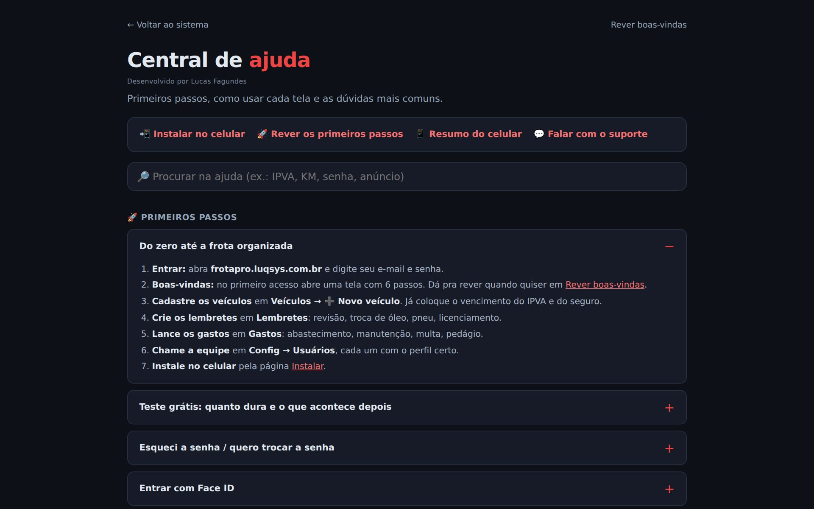

FrotaProDo primeiro acesso até a frota organizada: veículos, gastos, lembretes, relatórios e anúncios. O que cada tela faz e as dúvidas mais comuns.
No navegador do celular ou do computador: frotapro.luqsys.com.br
Ainda não tem conta? Toque em Testar 3 dias grátis. Quer só olhar? Use veja a demo, com dados de exemplo.
Quem troca é o administrador da conta, em Config → Usuários → ✏️. Se o administrador é você, chame o suporte no WhatsApp.
Depois de entrar, toque no 🔐 ao lado do seu nome. Nas próximas vezes, Entrar com Face ID. Vale só para aquele aparelho.
Abra frotapro.luqsys.com.br/instalar e siga o passo a passo do iPhone ou do Android. Fica com ícone na tela, igual aplicativo.

No primeiro acesso abre a tela de boas-vindas, com 6 passos. Cada um leva direto à tela certa:
Só o apelido é obrigatório. Já coloque placa, KM e o vencimento do IPVA e do seguro.
Revisão, troca de óleo, pneu, licenciamento. Por data ou por KM.
Abastecimento, manutenção, multa, pedágio.
Custo por km, consumo e gasto por categoria.
Em Config → Usuários.
Pra você e pra cada pessoa da equipe.
Depois toque em Ir pro sistema →. Dá pra rever esses passos quando quiser, pela Ajuda.

Valor estimado da frota, número de veículos, gasto do mês, do ano e total. Embaixo, os avisos de IPVA e seguro vencendo, os gráficos e os lembretes próximos (até 30 dias ou a menos de 1.000 km).


No cartão do veículo, mude o KM atual e saia do campo: salva sozinho. Lançou um gasto com o KM do momento? O KM do veículo sobe junto.
Em /resumo: gasto do mês, lembretes vencendo e KM de cada veículo numa rolagem só. Dá pra instalar como app separado na página Instalar.

Cada veículo vira um cartão com KM atual, valor de mercado, gasto total e custo corrigido. Toque no cartão pra ver os gastos dele; em ✏️ Editar abre a ficha.

| Cadastro | ➕ Novo veículo. Apelido obrigatório; marca, modelo, ano, placa, cor, combustível e KM. |
| Pelas fotos ou link | No topo da ficha: 📸 Preencher pelas fotos (veículo, odômetro, documento) ou cole o link de um anúncio. A IA preenche, você confere. |
| Compra e financiamento | Data e valor de compra. Se financiado: parcela, banco e parcelas pagas. |
| Seguro e IPVA | Valor e vencimento. Viram aviso no Dashboard quando estão perto. |
| Valor de mercado | Entra no valor da frota. 📈 Histórico guarda cada avaliação com data e fonte. |
| Custo corrigido | Compra + gastos corrigidos mês a mês pela taxa de Config → Correção de valores. |
| Vendeu? | 🗑 Arquivar. Fica em 🗄 Arquivados, com o histórico. Dá pra restaurar. |
O comparativo mostra cada veículo com KM rodados, gasto total, custo por km, média mensal e consumo. Embaixo, cada veículo tem o gasto separado por categoria.

Quem abre o link vê fotos, dados e o botão Falar no WhatsApp. As telas Veículos a Alugar e Veículos a Vender mostram o que está publicado e o que está em rascunho.

Em Veículos → 📥 Importar OLX, cole o endereço do anúncio: o FrotaPro cadastra o veículo com anúncio e fotos.
O sistema gera um feed com os anúncios publicados nos formatos do OLX, da Webmotors e do catálogo de veículos do Facebook. A ligação com a sua conta no portal é feita junto com o suporte.
| Administrador | Acesso total, inclusive a tela Config (usuários, categorias, correção e log). |
| Operador | Cadastra e lança em todas as telas, sem a tela Config. |
| Visualizador | Só consulta. |
| Permissões | Dá pra marcar ou desmarcar cada permissão no cadastro do usuário. |
| Categorias | Crie as suas de veículo e de gasto, com cor, em Config. |
| Log de atividades | As últimas 100 ações: quem entrou, cadastrou, editou ou excluiu. |
Todo usuário criado em Config → Usuários → ➕ Novo usuário enxerga a mesma frota.
